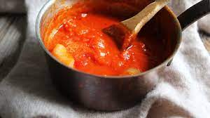

Tomato Sauce

Description
This is perhaps the most famous recipe created by Marcella Hazan, the cookbook author who changed how Americans cook Italian food.
It also may be her easiest. Use your favorite canned tomatoes for this and don’t be scared off by the butter.
It gives the sauce an unparalleled velvety richness.
Ingredients
- 2 cups tomatos and their juices
- 5 tablespoons butter
- 1 onion
Steps
- Combine the tomatoes, their juices, the butter and the onion halves in a saucepan.
Add a pinch or two of salt.
- Place over medium heat and bring to a simmer.
Cook, uncovered, for about 45 minutes. Stir occasionally, mashing any large pieces of tomato with a spoon.
Add salt as needed.
- Discard the onion before tossing the sauce with pasta. This recipe makes enough sauce for a pound of pasta.